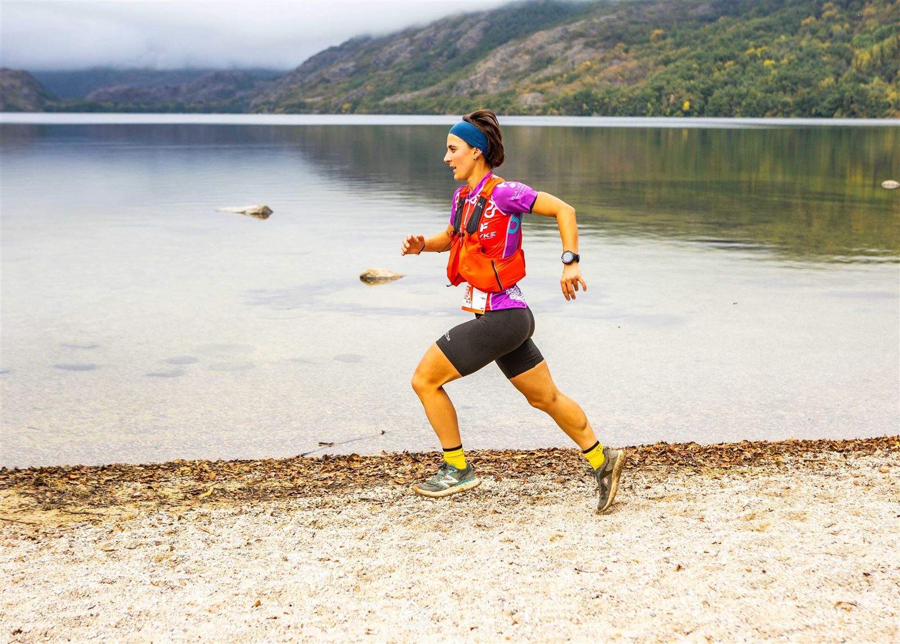
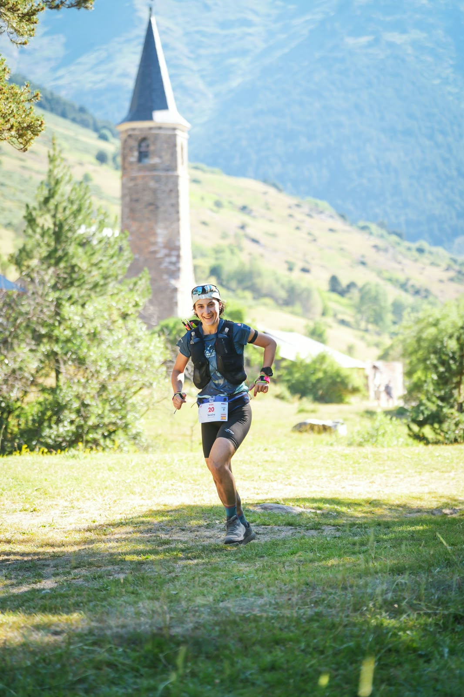

Cursos online
Lecciones en vídeo y por escrito que haces a tu ritmo, con tu progreso guardado en cada paso.

Cursos, guías y planes de entrenamiento para entender cómo entrenas y progresar en la montaña a tu ritmo.

Entrenar bien no es solo seguir un plan: es entender por qué haces cada sesión, cómo comer y recuperarte, y cómo gestionar la cabeza cuando las cosas en montaña se complican.
La Academia Salvaje reúne todo eso en un solo sitio, ordenado según los cinco elementos del Método Salvaje. Es la formación que acompaña a mis deportistas de Entrenos Salvajes, y también estará abierta a cualquier corredora o corredor que quiera aprender por su cuenta.
Muy pronto estará disponible.
Qué encontrarás
Lecciones en vídeo y por escrito que haces a tu ritmo, con tu progreso guardado en cada paso.
Material descargable para objetivos concretos, como tu primer trail o tu primera maratón de montaña.
Rutinas de fuerza, fichas de entrenamiento y pautas de nutrición para llevar a tu día a día.
En preparación
Estos son algunos de los materiales en los que estoy trabajando.
Guía para tu primera carrera de montaña
Plan para tu primera maratón por montaña
Rutinas de fuerza para montaña
Comer y beber en carrera